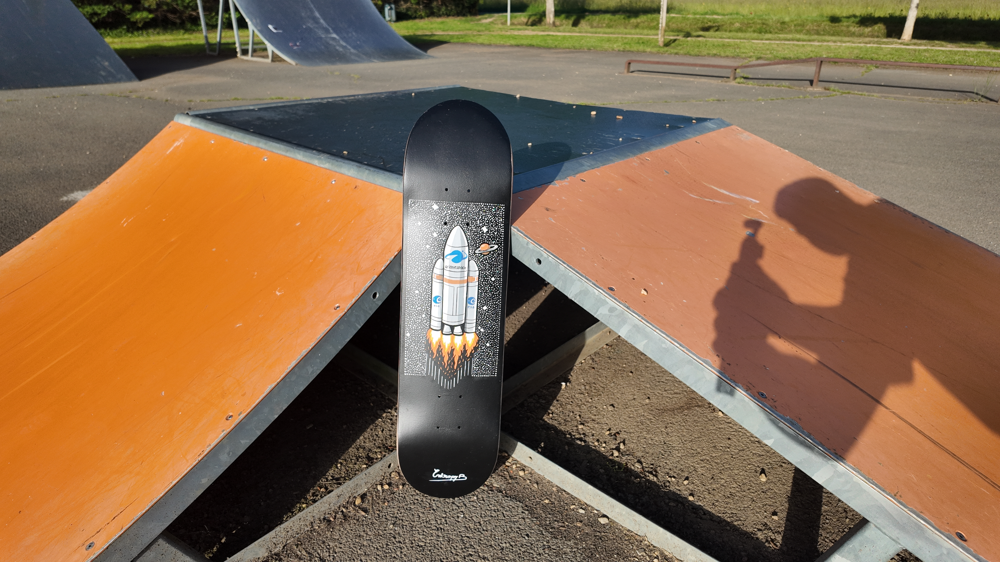
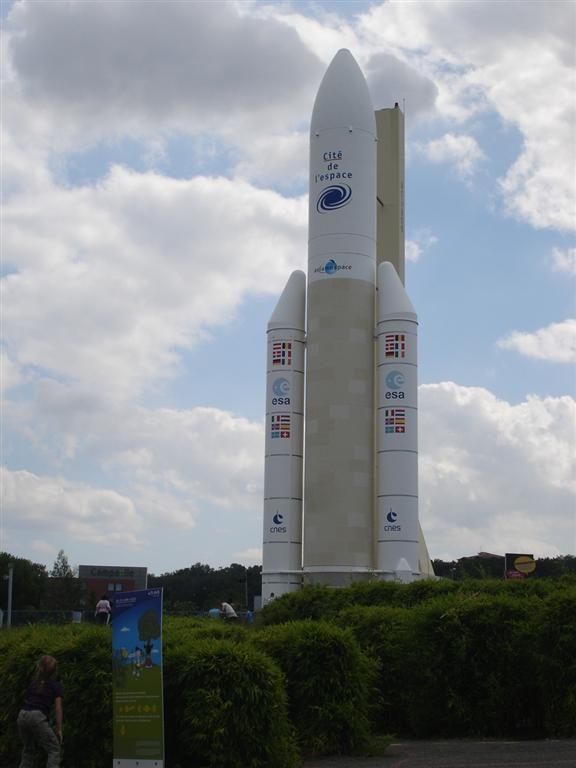

Arrianne 5
Un souvenir d'enfance tourné vers l'espace.
Entre fascination scientifique et rêve d'altitude.
Source d’inspiration
Toulouse a toujours eu une place particulière pour moi. La ville de l’aéronautique, de l’espace, des avions et des fusées. Impossible de grandir là-bas sans lever les yeux vers le ciel avec fascination.
Avant / Après

Je garde surtout un souvenir relétivement précis (avec mes yeux d'enfant) de la Cité de l’Espace et de cette immense maquette grandeur nature d’Ariane 5. Une fusée gigantesque que j’admirais du haut de mes probablement 1m20… peut-être moins. À cet âge-là, tout paraissait immense, presque irréel.

Depuis l’enfance, j’ai toujours été fasciné par tout ce qui vole : l’espace, les avions, les lanceurs spatiaux, cette idée de quitter le sol pour aller plus loin, et ce avec la grande question : "Comment on fait pour faire décoller un engin de 777 tonnes au décolage ?". Cette planche est directement née de cette fascination.

Pour ce custom, je voulais représenter Ariane 5 de manière assez minimaliste et design,
dans un esprit proche du custom Einstein.
Une silhouette simple, forte, immédiatement reconnaissable.
L’objectif n’était pas de faire une reproduction technique,
mais plutôt de retranscrire ce que cette fusée représentait pour moi :
le rêve, l’ambition, l’exploration et l’enfance.

J’aime l’idée qu’une simple forme puisse raconter autant de choses.
Ariane 5 est devenue un symbole fort de l’ingénierie européenne,
mais aussi un symbole personnel : celui des rêves qu’on construit enfant.
Cette planche est particulièrement symbolique pour moi,
mais elle sera malgré tout disponible à la vente.
Je ne peux malheureusement pas garder tous mes customs…
même si certains finissent déjà accrochés sur mes murs, il commence sérieusement à ne plus y avoir assez de place.

Petite histoire d'Arianne 5
Photo prise le 29 juillet 2011, alors agé de 8 ans.